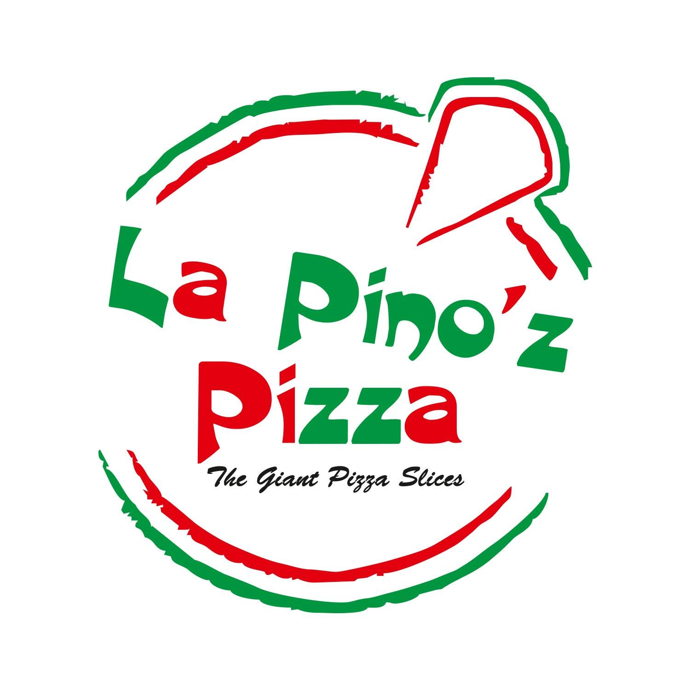
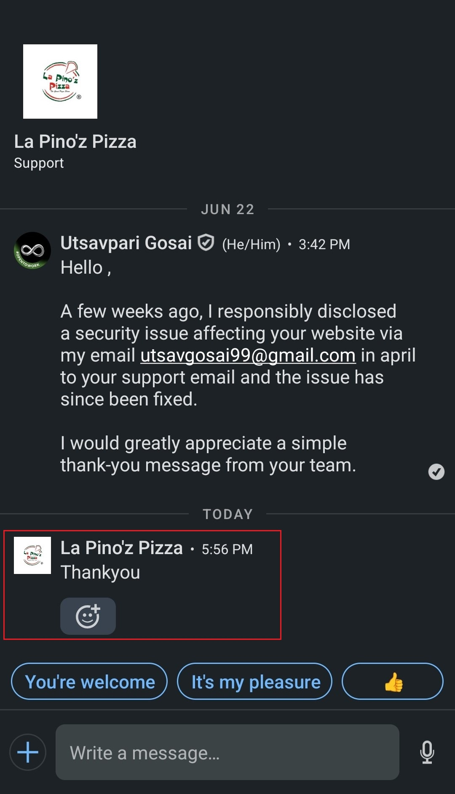

Hello Hackers! 👋

I hope you all are doing well and continuing to secure our digital landscape. 🌍🔒 Let's begin another security finding story!
Recently, I found a security issue on the Lapino'z Pizza website. 🍕 I was simply visiting their website to order some pizza, and I thought, "Why not test it with my custom wordlist?" 🤔
So, I opened Kali Linux 💻 and started running my custom directory
brute-forcing wordlist against the website. To my surprise, I discovered
two sensitive Git related files
that should not have been publicly accessible. 🚨
🤝 Responsible Disclosure
Although Lapino'z does not have a Bug Bounty Program, I believe in responsible disclosure as a security researcher. So, I reported the issue to the support email address listed on their website. 📧
Unfortunately, I never received any response. After waiting for some time, I assumed they were not interested in acknowledging the report. Based on my personal experience, many Indian companies still do not acknowledge security researchers even with a simple "Thank You" message. I eventually decided to move on. 😔
✅ The Fix
A few days later, while checking my email, I revisited the vulnerable URL and was surprised to see that the issue had been fixed. ✅ This confirmed that my report had helped improve their security. However, there was still no acknowledgment or reply.
I sent multiple follow-up emails and even tried reaching out through X (formerly Twitter), LinkedIn, and phone calls, but unfortunately, I didn't receive any response. 📩📞 So, I finally decided to leave it there and move on.
🎉 A Thank You, At Last
Then one day, while checking my LinkedIn notifications, I received a Thank You message from the official Lapino'z Support account. 🎉✨

I was genuinely happy because, although there was no bounty (which is understandable since they don't have a bug bounty program), they finally acknowledged my contribution. 🙏❤️
Sometimes, a simple "Thank You" means a lot to security researchers. It motivates us to continue reporting vulnerabilities responsibly and helping organizations become more secure. 🛡️
I thank God for this acknowledgment and also thank all my well-wishers for their constant support and encouragement. ❤️🙏
🏅 Lessons Learned
- 🔍 Even without a bug bounty program, responsible disclosure is worth doing.
- 🛡️ Exposed Git files are a common but serious misconfiguration.
- 📩 A lack of response doesn't mean the report was ignored it may still be fixed.
- ⏳ Patience and persistence matter, even when acknowledgment is delayed.
- 🚀 Keep learning, keep reporting, and never stop improving.
💡 Final Thoughts
That's all for this finding story! If you have any questions or would like to discuss this finding, feel free to connect with me through my Linktree or any of my social media handles. 💬🔗
Thank You,
MR.X FACTOR
🔗 Handles:
- Linktree: https://linktr.ee/mrxfact0r_99